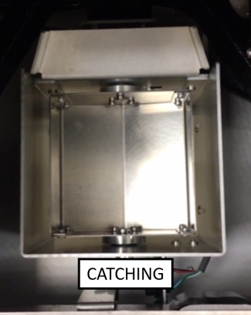
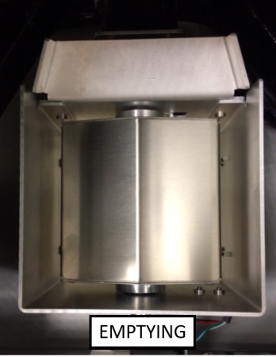
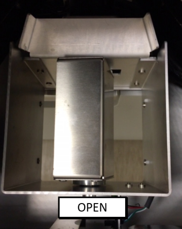

Waste on the Fly General Information
Description
Continuous Access Waste
During assay processing, the Panther Plus waste drawer may be opened to empty liquid waste and remove and replace the solid waste bag.
The Liquid Waste-on-the-Fly module stores liquid in its vacuum bottle while the removable waste bottle is removed from the system and emptied. When the waste drawer is closed, the contents of the vacuum bottle are intermittently emptied into the removable waste bottle. The Panther Plus Continuous Access Solid Waste-on-the Fly modules will temporarily store reagent tips in the Tip Carousel and tiplets in the Tiplet Disposable tip within an MTU. Catcher while the waste drawer is opened. When the waste drawer is closed again, the Tip Carousel and Tiplet Catcher will empty the stored reagent tips and tiplets into the waste bag.
Disposable tip within an MTU. Catcher while the waste drawer is opened. When the waste drawer is closed again, the Tip Carousel and Tiplet Catcher will empty the stored reagent tips and tiplets into the waste bag.
Liquid Waste on the Fly
Waste Drawer
The Panther Plus Liquid Waste-on-the-Fly system allows the removal of liquid waste during assay processing by utilizing a positive displacement pump that transfers liquid from a vacuum pressure bottle (vacuum bottle) to a secondary ambient pressure bottle (removable waste bottle) that can be emptied during assay processing. The Panther Plus Liquid Waste-on-the-Fly system is comprised of the following major components:
- Vacuum bottle
- Bleach filter
- Removable waste bottle
- Waste bellows pump
- Dripless fitting system
Liquid waste is pulled under vacuum into the vacuum bottle. Waste can then be pumped from the vacuum bottle into the removable waste bottle using the waste bellows pump, which will be turned on intermittently by the system when the volume in the vacuum bottle reaches a certain liquid level. The waste drawer may be opened and the removable waste bottle can be removed. The dripless fitting system utilizes a normally closed solenoid valve that is connected to the vacuum bottle. When the solenoid valve is opened, liquid is pulled from the removable waste bottle fitting interface back into the vacuum bottle to ensure liquid does not drip from the fitting when the removable waste bottle is removed from the drawer. The vacuum bottle will continue to collect liquid waste while the removable waste bottle is being emptied.
Solid Waste on the Fly
Tip Carousel
The Tip Carousel replaces the Reagent Tip Chute in the Panther system, and mounts to the service drawer in the same mounting locations. The Tip Carousel module additionally occupies space above and behind the Magnetic Parking Station.
The module has a motor-actuated chain consisting of tip holders and chain blanks. When the waste drawer is closed, the chain is positioned such that chain blanks are present in the pipettor ejection location. Pipette tips are ejected directly into the tip chute which routes tips into the waste bag. When the waste drawer is open, the chain drive mechanism indexes to an empty tip holder location so that a reagent pipette tip can be ejected into the tip holder. The tip carousel continues to index to the next empty tip holder location as reagent pipette tips need to be ejected. The tip carousel has capacity to store up to 22 pipette tips. Once the waste drawer is closed, the chain drive mechanism rotates counter-clockwise to eject the stored pipette tips into the tip chute to the waste bag.
Tiplet Catcher
The Tiplet Catcher module replaces the existing Waste Splash Guard in the Panther system. The module mounts to the service drawer in the same mounting locations as the Waste Splash Guard. The Tiplet Catcher has a motor-actuated bucket that rotates to specified positions. When the waste drawer is closed, the bucket is in its “open” position which allows tiplets from the MagWash Stations to drop directly into the waste drawer beneath. When the waste drawer is opened, the Tiplet Catcher rotates clockwise to its “catching” position and will catch used tiplets from the MagWash Stations. Once the waste drawer is closed again, the bucket rotates clockwise to empty its contents into the waste bag, and then rotates counter-clockwise back to its “open” position.
- Tiplet Catcher positions.
 Set the Tiplet Catcher to Catching.
Set the Tiplet Catcher to Catching.
- Set the Tiplet Catcher to Emptying.

- Set the Tiplet Catcher to Open.

 button at the top of the page to send feedback, comments, or change requests.
button at the top of the page to send feedback, comments, or change requests.